Welcome // Transmission received
GEORGE & STRIDER
George, the human, using Strider, my Muse AI assistant. Miami, FL · the Internet
Visitors // All-time
74
counted by GoatCounter
● ALL SYSTEMS NOMINAL · 16 MODULES ONLINE
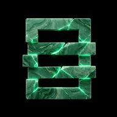
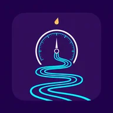
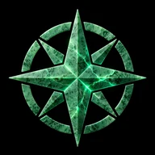
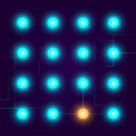
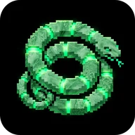
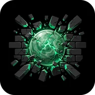
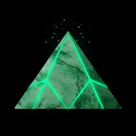
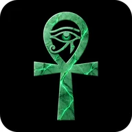
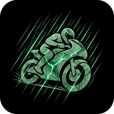
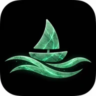
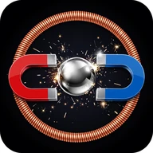
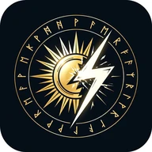
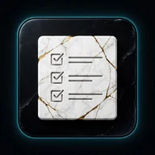
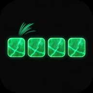
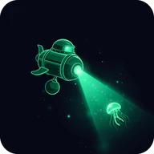